Creating A Module¶
Overview
This page details the steps in creating your own module derived from the base class. The sections are presented in the order you should write your module.
| Date: | Jun 05, 2017 |
|---|---|
| Author: | Jeremy Ernst |
Contents
IDE and Style Guide¶
The preferred IDE for developing ARTv2 modules is PyCharm, since we can specify our code style and inspections in the settings. Below are the settings used for code style and inspections to set in PyCharm.
To access the settings in PyCharm, go to File -> Settings (or hit Ctrl+Alt+s). On the left, find Editor, then Code Style.
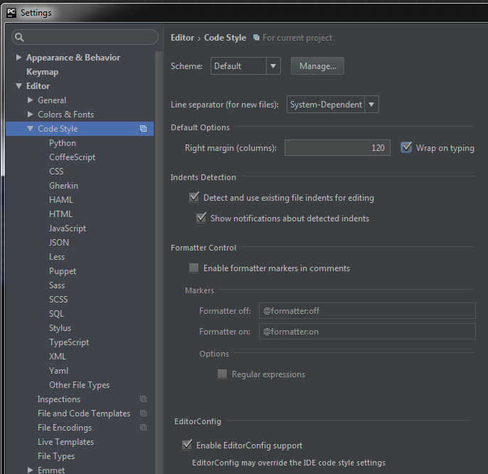Now, go to the Python section under Code Style. These are the settings for each of those tabs:
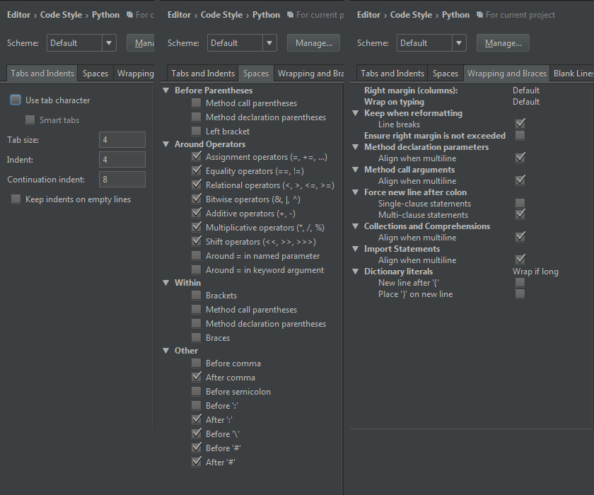 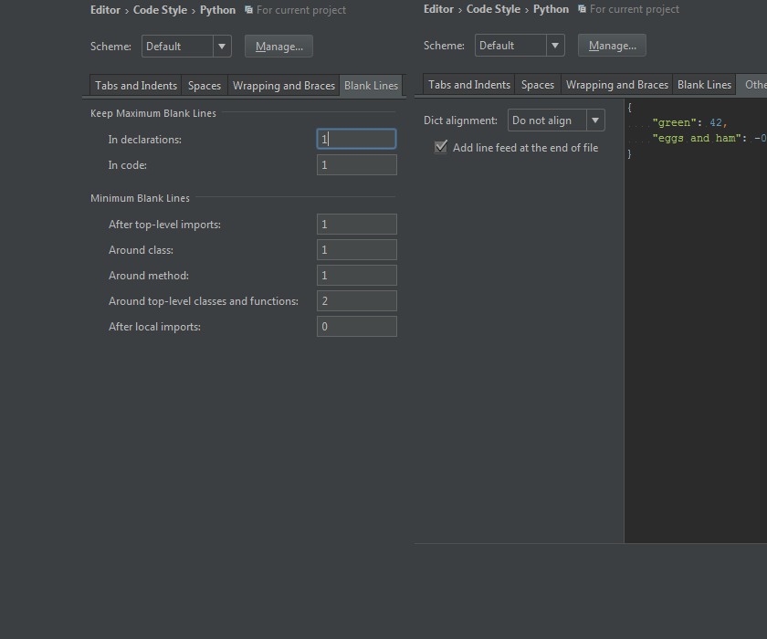For Inspections, browse in the settings to Editor -> Inspections. There are two sections in here we will edit: General and Python.
For General, items that have changed are denoted in blue text:
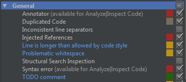For Python, items that have changed are denoted in blue text:
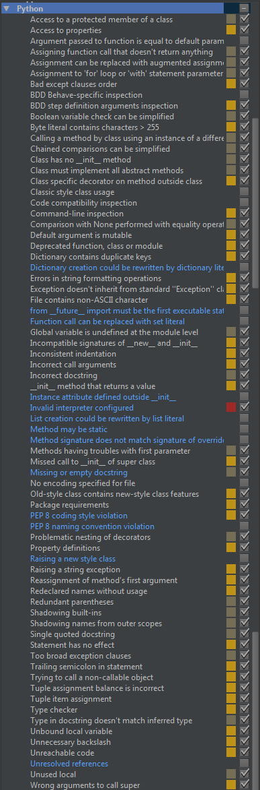Getting Started¶
Create an Icon¶
To begin creating a module, the very first thing you’ll want to do is create the icon for the module so it shows up in the UI. To do so, browse to ARTv2/Core/Icons/System and open moduleIcons.psd in Photoshop. Every module needs two icons: the standard icon and the hover-state icon. The photoshop file is setup to easily accommodate this.
Standard icon for the Torso module:
Hover icon for the Torso module:
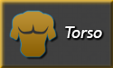Your icons will be saved as a png in ARTv2/Core/Icons/Modules. The syntax is moduleName.png and hover_moduleName.png.
Create the Python File¶
In the ARTv2/Core/Scripts/Modules folder, add a new python file for your module following the existing naming conventions (ART_moduleName.py)
To get started on the class, open ART_Head.py and copy from the docstring down to right before the class definition. This will save time instead of having to write all this from scratch. If you have any new file attributes, update the docstring with that information. Most likely, the import statements won’t need to change, so let’s skip down to the file attributes and redefine these for our module.
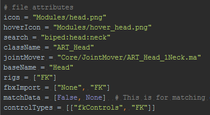File Attributes:
*icon: relative path to the standard icon we created ("Modules/moduleName.png").
*search: search terms, separated by a ":", that you want your module to be found by ("joint:leaf").
*className: the name of the module class, following the naming conventions ("ART_Head").
*jointMover: the relative path to the joint mover file (Hasn't been created yet, we'll come back to this).
*baseName: when a module is created, the user can specify a prefix and suffix which wrap the base name.
For example, if our baseName is "head", the module name will be ("optionalPrefix") + "head" + ("optionalSuffix").
*rigs: a list of the rigs this module will build (for example, ["FK::IK"]).
*fbxImport: a list of the available options when import motion onto the rig from an FBX,
(for example, ["None", "FK", "IK", "Both"]). "None" should always be an option.
*matchData: if the module has more than one rig type, you may want to add the ability to match between rig types.
This attribute allows you to specify whether or not the module can match (first argument in list) and if so,
what are the match options (a list of strings). For example: [True, ["Match FK to IK", "Match IK to FK"] ].
If you do not want your module to have the ability to match, you would simply have [False, None]
*controlTypes: this will make sense much later, but this is a list of the attributes you will create on the
network node that hold your different rig controls, and a label for what type of control those attributes
contain. For example: [["fkControls", "FK"]] means that on the module network node, there is an attribute called
fkControls that holds a list of the rig controls, and those controls are of type FK. This is used by the select
controls tool (ART_SelectControlsUI.py).
At this point, your file should look something like this:
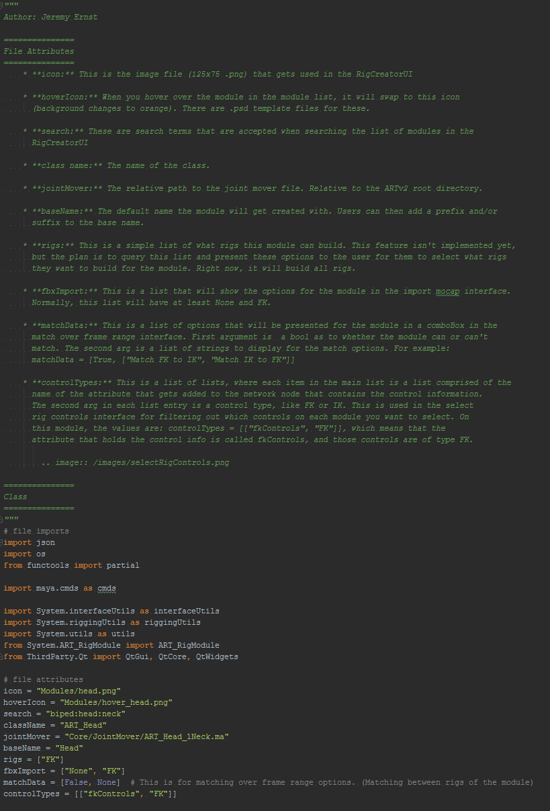If at this point, you were to launch the Rig Creator under the ART 2.0 menu, you should see your module now in the module list (just don’t click on it yet!)
Defining the Module Class¶
Steps:
- Update docstring.
- Update base class init arguments.
Once again, it's probably easiest to just open a module like ART_Head.py and copy the class definition and the
"__init__". All modules should inherit from ART_RigModule as there is a ton of functionality in there that you'll
get for free. This guide assumes you will be inheriting from ART_RigModule.
All you really need to change here is any docstring info, and the call to the base class "__init__", replacing
the first two arguments with your module's information. Those first two arguments are: moduleName and moduleType.
The moduleType is the same string you defined for your className at the top of the file. The moduleName is the name
the network node will be given on creation. (For example: "ART_Head_Module", "ART_Head"). The network node will
store all our module's attributes and connections. Maya will automatically add a number to the end of the moduleName
if a node of the same name already exists, which is what we want. Usually, the syntax for the moduleName is
simply the moduleType + "_Module".
Add Attributes¶
Steps:
- Add Created_Bones attribute and set its default value
- Add baseName attribute and set its value to baseName (var)
- Add canAim attribute and set its value depending on whether you want your module to be able to have “aim mode” functionality.
- Add aimMode attribute and set its default value to False. (This is whether or not the module is currently in aimMode.)
- Add any additional attributes your module will need.
The next function we need to implement will add any attributes we need to our module's network node.
These are things like: can this module aim? how many spine joints? etc.
The base class handles the creation of the network node, so if you were to launch the Rig Creator, and add your
module, there would be a network node in the scene with your defined moduleName. There are some generic attributes
that are always added by the base class, but this function will add attributes we want to track for our module.
If you were to try and create your module now, you would still get errors, but a network node with your defined attrs should be created:
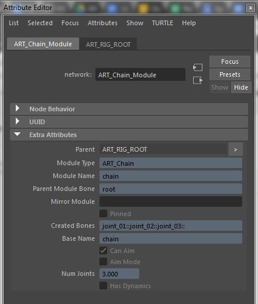
There are four attributes you must add for your module, as the tools will be looking for them.
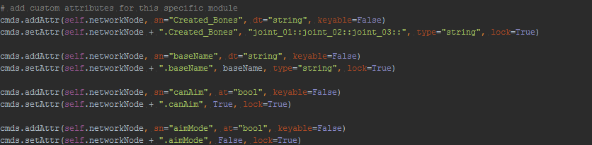For Created_Bones, you will set the value to be whatever your default joint mover configuration will be:
"joint_01::joint_02::joint_03::" (ART_Chain). Since we haven't built our joint mover yet, this may change,
but know that you'll need to revisit this attribute so the default value is equal to your default joint mover
configuration.
baseName is pretty self-explanatory. For canAim, if you want this module to have "aim mode" functionality, set this
to True. You can leave aimMode set to False by default regardless.
Any additional attributes you know you'll need, you'll want to add them in this function. This is anything that your
settings UI will have options for, like number of toes, or number of neck joints, etc.
Skeleton Settings UI¶
Steps:
- Call on base class method to get basic structure
- Add Mirror Module info (if applicable)
- Add Current Parent info (Always)
- Add Change Name and Change Parent buttons (Always)
- Add Mirror Module button (if applicable)
- Add Bake Offsets button (Always)
- Add any custom widgets needed for your module.
It's best to reference another module's implementation when writing this function. You'll likely be able to
copy/paste quite a bit from another module for steps 1-6. If you're writing a module that does not support
mirroring, open up ART_Head to copy/paste from for those first six steps. If your module can mirror, open
up ART_Leaf.
Open up ART_Chain.py and look at skeletonSettings_UI to view the code that created the above interface in the image.
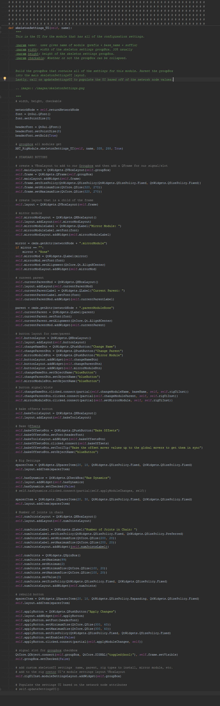Building the Joint Mover¶
Steps:
- Build the joint mover geometry in a similar style to the existing joint movers.
- Create the global mover curve object and color it yellow. (”.overrideColor”, 17)
- Create the offset mover curve object (usually duplicate the global, and scale down) and color it light blue. (”.overrideColor”, 18)
- Create the geometry mover curve object (usually duplicate the offset, and scale down) and color it light pink. (”.overrideColor”, 20)
- Name the joint mover curve objects according to the naming convention (list below)
- Create a group node for each global mover that is in the same space as the mover control. Name these according to the naming convention.
- Create the LRA node (pull from an existing file, making sure material names are unaffected) and the LRA group.
- Setup the hierarchy of movers.
- Set geometry to referenced, check naming, check materials, finalize hierarchy.
The next step is to create the joint mover. There are a few basic rules when creating a joint mover for a module. It’s best to look at an existing joint mover file to review how they’re setup. When building the joint mover, try to adhere to the aesthetic that has been defined by the existing joint movers. The first step is to build the mesh that will be our proxy geometry.
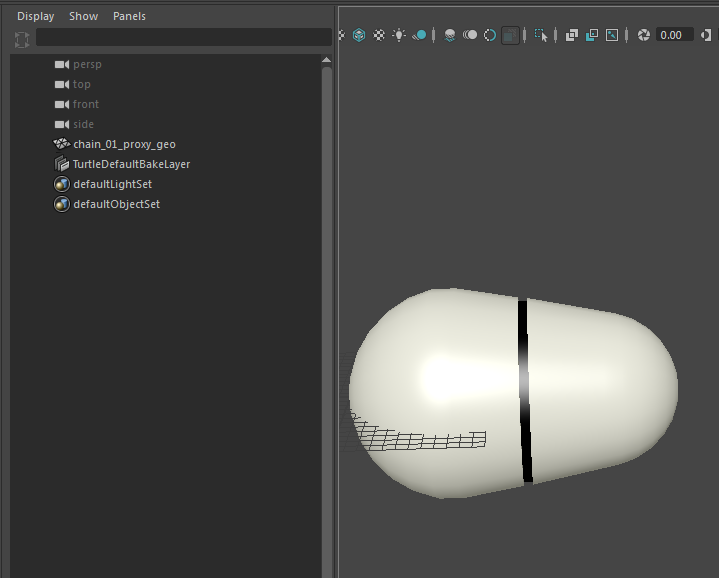The geometry has a style to it that also uses two materials that you can see from an existing file. proxy_shader_black and proxy_shader_tan. Your geometry should also use those material names with those exact colors. It may be easiest to open an existing file and copy/paste the materials into your current working file. Make sure to also follow the naming convention for the geometry. In this example, I am building the chain module. For now, I will completely build out one link of the chain and deal with the other links later.
After we have our geometry built with the correct naming and the materials assigned with the correct names and colors, the next step is to build the global mover curve object. This can be as simple or complex as you want. In the chain module, I’ll just use a simple circle.
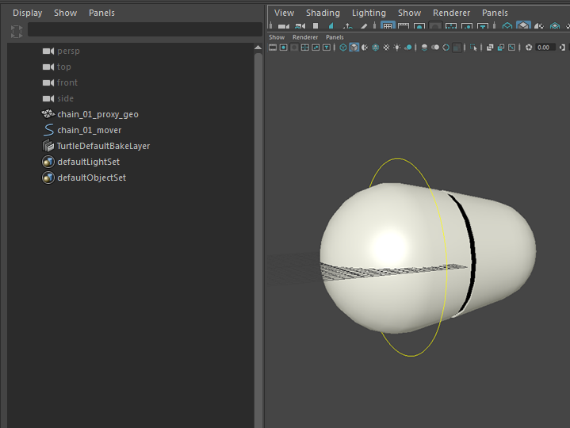As noted in the steps, the global mover has to be a specific color. You can achieve this with selecting the object and simply running: cmds.setAttr(cmds.ls(sl = True)[0] + ".overrideEnabled", True) cmds.setAttr(cmds.ls(sl = True)[0] + ".overrideColor", 17) Also, the naming convention is controlName + "_mover", so for this link of the chain, it will be "chain_01_mover". One important thing I should note is that you should make sure your pivot on the control is where you want it! For this chain control, the pivot will actually be at the origin, right at the head of the chain.
Now we need to create the offset mover, which is simply as easy as duplicating our global mover and scaling the CVs in.
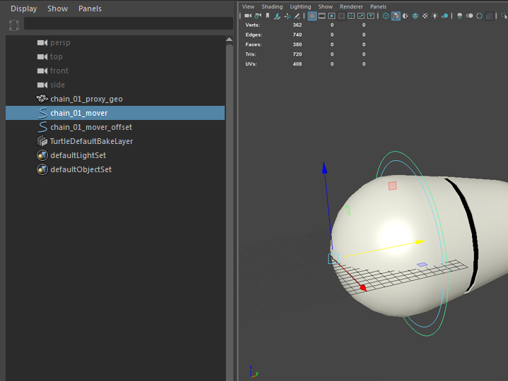As noted in the steps, the offset mover has to be a specific color. You can achieve this with selecting the object and simply running: cmds.setAttr(cmds.ls(sl = True)[0] + ".overrideEnabled", True) cmds.setAttr(cmds.ls(sl = True)[0] + ".overrideColor", 18) Also, the naming convention is controlName + "_mover_offset", so for this link of the chain, it will be "chain_01_mover_offset".
The last mover control is for the proxy geo itself, so the user can move, rotate, and scale the proxy geo itself, which doesn’t actually affect the joint position at all, it’s just for aesthetics. Again, duplicate the offset mover and scale the CVs in to quickly create this mover.
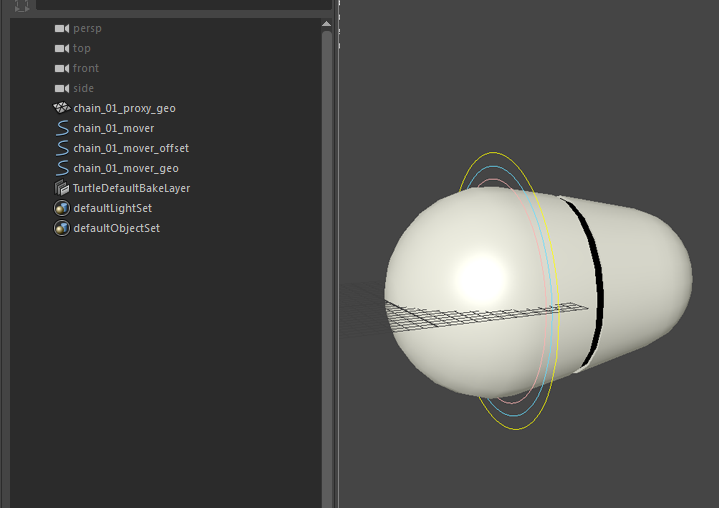As noted in the steps, the geo mover has to be a specific color. You can achieve this with selecting the object and simply running: cmds.setAttr(cmds.ls(sl = True)[0] + ".overrideEnabled", True) cmds.setAttr(cmds.ls(sl = True)[0] + ".overrideColor", 20) Also, the naming convention is controlName + "_mover_geo", so for this link of the chain, it will be "chain_01_mover_geo".
Now we can setup the hierarchy of our movers. For the global mover, create an empty group that is in the same space as the global mover control. This can be achieved by creating an empty group, point and orient constraining the group to the global mover, and deleting the constraints. The name of the group will be controlName + “_mover_grp”. At this point, make sure that the orientation of your group is what you want your control to be. For instance, if you want rotateX to be your twist axis, make sure to adjust the group orientation to address this. For this chain control, I wanted Z to be my pitch axis, Y to be my yaw axis, and X to be my roll axis, so I needed to adjust the rotate values until this was the case.
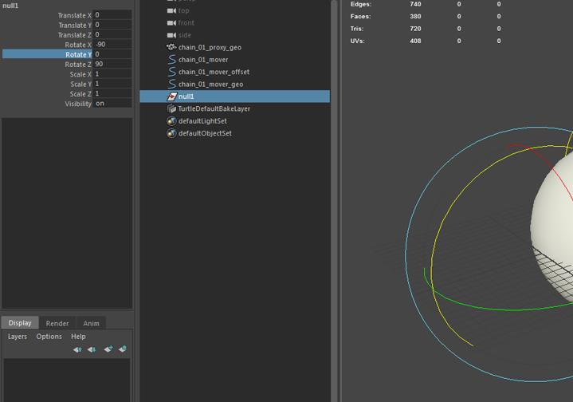
Now that the group orientation is as desired, go ahead and parent the global mover to the global mover group. Then parent the offset mover to the global mover. Then parent the geo mover to the offset mover, and lastly, parent the proxy_geo to the geo mover. Your hierarchy should look like this:
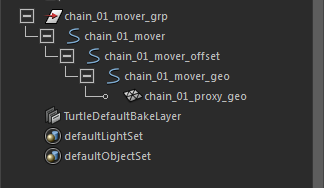
Select the global mover (not the mover group) and freeze transforms on translate, rotate, and scale. Now our movers have the correct orientation that we want and we can move onto the next step.
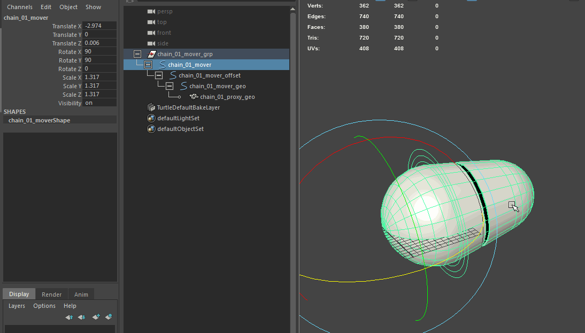
The next step for the joint mover is to add the LRA control (local rotation axis) to display the orientation of the “joint”. To do this, I usually will open another joint mover file, and copy an existing LRA control, and then go back to this scene and paste it, like so:
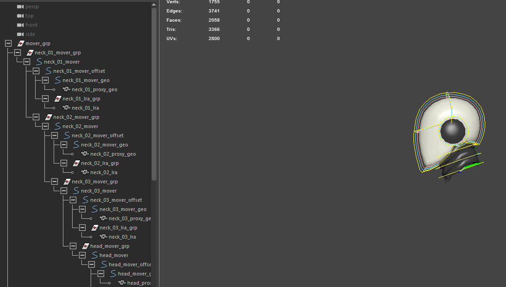
We’ll need to unlock the translate and rotate channels on the LRA control (using the channel control) in order to be able to properly set the space of the control for the next step. Now you can point/orient constrain the lra to the global mover control and delete the constraints. The display of the LRA should match the true orientation of the global mover.
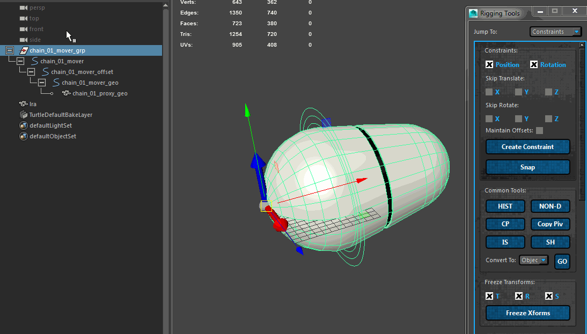
Just like the global mover, we need to create a group node for the LRA control. The naming for the LRA control is controlName_lra, while the group will be controlName_lra_grp. Point/orient constrain the newly created group to the LRA control and remove the constraints. Name the group correctly, then parent the LRA under the group. The group will be parented under the offset control, so that your hierarchy looks like this:
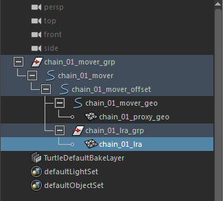
Real quick, since we copy/pasted our LRA control into this scene, let’s make sure the materials are still named correctly. As you can see, they have “pasted__” in the name, so let’s remove those prefixes from the materials before continuing.
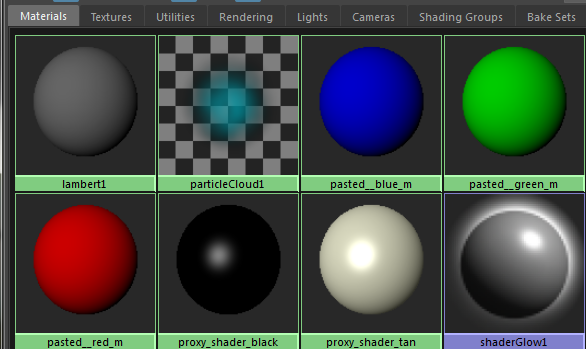
We also need to lock down the LRA control’s translate and rotate channels again, as we don’t want the user to be able to directly manipulate this control, as it is just for visualization. | | | | For each joint in your module, you would need to repeat all of these steps. Each joint’s “mover” group would then get parented under its parent’s global mover. For the chain module, if the joint mover had 3 links in the chain, this is what that would look like:
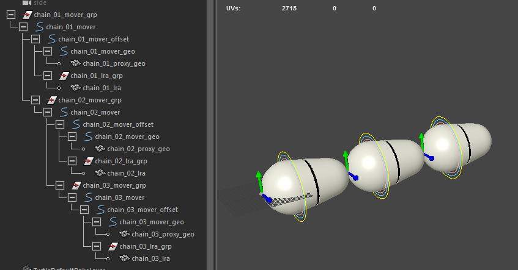
Another thing we need to do real quick is set our proxy geo and LRA geo to be referenced by enabling overrideEnabled and setting the display type to reference. You can use this script to easily achieve this:
#select a piece of geometry, then run this to set that geometry to be referenced.
cmds.setAttr(cmds.ls(sl = True)[0] + ".overrideEnabled", True)
cmds.setAttr(cmds.ls(sl = True)[0] + ".overrideDisplayType", 2)
Lastly, we need to add a mover_grp as the very top group node to our joint mover. Simply create an empty group, name it mover_grp, and parent your top-most global mover group underneath. It should look like this:
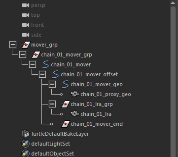
This concludes the basic guideline to creating a joint mover for your module. Definitely take a look at existing joint mover files and their applyModuleChanges functions to see how other modules are set up.
Testing the Joint Mover¶
With the joint mover file now built, we should be able to test adding our module and making sure the joint mover file comes in. You will still get errors, as there are a few other functions that need to be added, but we can at least make sure our file is coming in properly. Remember that the file the class is looking for is defined at the top of the class file.